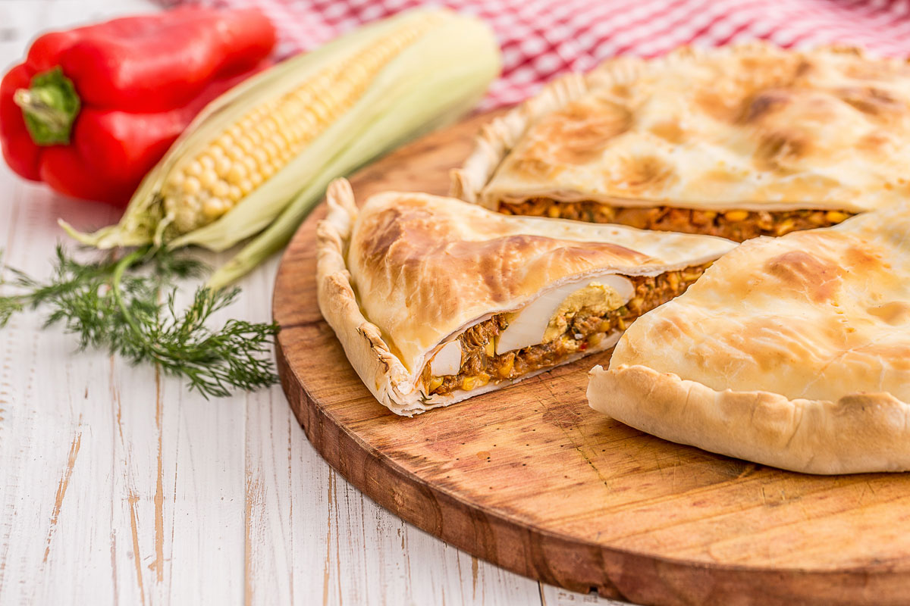

Tarta de atun

Descripción
Esta es una receta para cocinar una tarta de atun.
Ingredientes:
- 1 morron
- 2 cebollas
- 3 latas de atun
- 1 cucharada de pimenton dulce
- Sal
- Pimienta
- Tomate pelado y cubeteado
- 50gr de aceitunas en rodajas
- 3 huevos duros
- 2 tapas de tarta de hojaldre
Pasos a seguir:
- Sofreír en un fondo de aceite la cebolla y el morrón picado. Agregar el atún escurrido, el pimentón dulce, sal y pimienta.
- Luego el puré de tomate. Cocinar unos 2 o 3 minutos y apagar el fuego. Rectificar sal de ser necesario. Agregamos las aceitunas y dejamos enfriar.
- Estirar la masa de tarta sobre la tartera apenas aceitada, colocamos el relleno, los huevos duros que corté en gajos y tapar. Repulgar y pinchar la superficie con un tenedor. Llevar a cocinar en horno horno pre-calentado fuerte 220°/250°. Aproximadamente lleva 30 minutos.